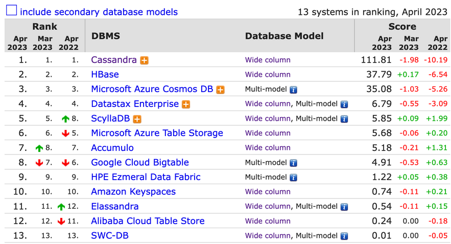
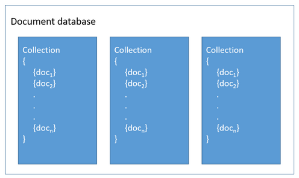
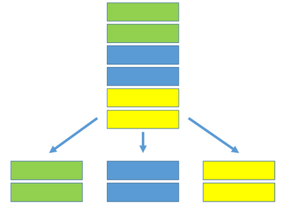
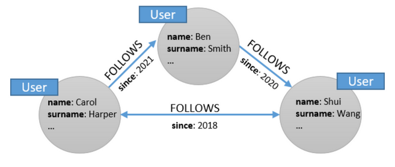
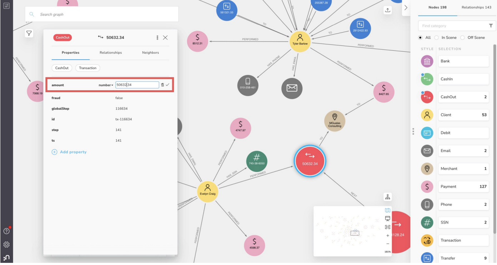

4.7 Databases#
데이터를 저장하기 위해 사용되는 데이터베이스는 크게 RDBMS와 NoSQL(Not only SQL)로 나눌 수 있습니다.
이번 챕터에서는 그 중 NoSQL 데이터베이스의 종류 및 특징에 대해 알아보고자 합니다.
Key-Value Store (KVS)#
Key-Value Store (KVS) 는 모든 데이터를 key - value 쌍으로 저장하는 데이터베이스로, 해시 함수나 python에서의 dictionary 형식과 유사한 형태로 저장됩니다.
기본 operation#
PUT: 새로운 key - value 쌍을 입력합니다. (이미 해당 key가 존재할 경우에는 value를 업데이트 합니다.)GET: 주어진 key에 대한 value를 반환합니다.DELETE: 해당 key가 존재할 경우, key - value 쌍을 삭제합니다.
장점#
value에 대한 data type 제약이 없습니다.
value에 각각 다른 속성을 추가할 수도 있습니다.
user:123:preferences = {"language": "ko"} user:123:preferences = {"language": "en", "color": "blue"}
단점#
key에 의해서만 값을 찾아야 하므로, key 값을 알 수 없는 경우 데이터를 찾을 수 없습니다.
이를 위해 value 기반으로 검색하는 기능을 제공하거나, 보조 인덱스를 생성하는 데이터베이스도 있습니다.
사용 예시#
유저별 세션 정보 저장 (key : 세션 ID / value : 세션 정보)
유저별 프로필 및 기본 설정 (key: 유저 ID / value : 유저 정보)
유저별 추천, 광고 등 (key: 유저 ID / value : 해당 유저에 적합한 추천 아이템 및 광고 등)
Top 10 Key-Value Stores#
그렇다면 어떤 Key-Value Store가 많이 사용되고 있을까요?
https://db-engines.com를 기반으로 Top 10 Key-Value Stores를 살펴보겠습니다.
Redis#
가장 많이 사용되는 KVS는 바로 Redis(Remote Dictionary Server) 입니다.
Twitter, Pinterest, stackoverflow 등 다양한 회사에서도 유저별 세션 정보 저장 시 이용하고 있는 Redis는 다음과 같은 특징을 가지고 있습니다.
in-memory 구조
데이터를 디스크에 저장하지 않고 메모리에 저장하기 때문에 빠른 속도를 보장하게 됩니다.
추가로 데이터를 디스크에 유지할 수도 있습니다.
비동기 복제 제공
데이터가 기본 스토리지에 먼저 저장된 뒤, 복제본을 생성합니다.
Oracle Berkeley DB#
(인기 있는 DB는 아니지만) 현업에서 많이 사용하고 있는 KVS 중 하나로 Oracle Berkeley DB가 있습니다.
현업에서 간단한 데이터 정제 시 key별 value 정보가 필요할 경우 사용되고 있습니다.
임베디드 데이터베이스로, sqlite와 같이 파일 형식으로 DB가 저장됩니다.
다만 병렬 접근 시 속도가 매우 느려진다는 단점이 있으며, 이러한 점이 보완된 RocksDB 등이 제시되고 있습니다.
Wide-Column Store (Column-family Store)#
Google BigTable 에서 유래된 Wide-Column Store(Column-family Store)는 row key와 column name의 조합으로 값을 저장합니다.

RDBMS와 유사한 형태로 볼 수 있지만, column이 지정되지 않고 자유롭게 입력될 수 있는 형태로 되어 있다는 차이점이 있습니다.
장점#
row마다 다른 column 개수를 가질 수 있고, 필요할 때마다 원하는 column 추가할 수 있습니다.
RDBMS에서는 특정 column 값이 없을 때 default value를 넣어야 했지만,
Wide-Column Store에서는 특정 column에 대해 default 값으로 채우지 않아도 됩니다.필요한 column 정보만 쓰면 되고 특정 column에 해당하는 데이터만 읽으면 되기 때문에 처리 속도가 빠릅니다.
단점#
multi-row 트랜잭션을 지원하지 않습니다.
join, subquery 등 또한 지원하지 않습니다.
사용 예시#
event logging: 이벤트별 사용자 로그 내역, 애플리케이션 오류 내역 등을 저장합니다.
컨텐츠 관리 시스템: 컨텐츠별 댓글, 링크, 태그 등을 저장합니다.
Top 10 Wide-Column Stores#
그렇다면 어떤 Wide-Column Store가 많이 사용되고 있을까요?
Key-Value Store와 마찬가지로 https://db-engines.com에서 Top 10 Wide-Column Stores를 살펴보겠습니다.
 (출처: https://db-engines.com/en/ranking/wide+column+store)
Cassandra#
페이스북에서 개발되고 애플, 넷플릭스, 우버 등에서 이용중인 Cassandra는 아파치 재단에서 관리하고 있는 오픈소스입니다.
데이터가 노드에 분산되어 저장되므로 노드를 추가하여 수평적으로 확장할 수 있습니다.
Cassandra 전용 쿼리 언어인 CQL(Cassandra Query Language)을 제공합니다.
이는 SQL과 비슷하지만 join 및 subquery를 제공하지 않고 외래 키가 없다는 특징이 있습니다.// 테이블 생성 CREATE TABLE users ( user_id uuid PRIMARY KEY, first_name text, last_name text, email text, password text, created_at timestamp ); // 데이터 삽입 INSERT INTO users (user_id, first_name, last_name, email, password, created_at) VALUES (uuid(), 'John', 'Doe', 'john.doe@example.com', 'password123', toTimestamp(now())); // 데이터 조회 SELECT * FROM users WHERE user_id = f3f9e3e3-301b-4c8a-ae0a-ccbae7b477a2; // 데이터 업데이트 UPDATE users SET password = 'newpassword123' WHERE user_id = f3f9e3e3-301b-4c8a-ae0a-ccbae7b477a2; // 데이터 삭제 DELETE FROM users WHERE user_id = f3f9e3e3-301b-4c8a-ae0a-ccbae7b477a2;
Document Store#
Document Store는 흔히 알고 있는 JSON 형식으로 데이터가 저장되는 데이터베이스 입니다.

Document Store에는 테이블을 나타내는 collection과 테이블 내 row를 나타내는 document가 있습니다.
(각 document가 collection에 저장된다고 볼 수 있습니다.)
장점#
collection 내 document들끼리 동일한 구조이지 않아도 되기 때문에
스키마를 정하지 않고 데이터를 저장할 수 있으며, 스키마가 변경되어도 데이터를 계속 저장할 수 있습니다.데이터가 직관적이고, 개발 시 객체로 바로 적용할 수도 있습니다.
테이블 간 join 또한 필요하지 않습니다.
단점#
중복 데이터에 대한 관리가 어렵다는 단점이 있습니다.
만약 특정 값을 다른 문서로 복사한 다음 그 값이 변경된다면,
다른 문서 내용도 변경하기 위해 복사를 해왔던 문서를 기억해야 하는 번거로움이 있습니다.
사용 예시#
상품 카탈로그
{ "product_id": 123, "name": "Macbook M2 Pro", "category": { "category_id": "345", "name": "laptop" } }
Event logging : 유저 로그, 제품 구매 내역, 오류 로그 등
Top 10 Document Stores#
Document Store에서는 어떤 데이터베이스가 많이 사용되고 있을까요?
앞에서와 같이 https://db-engines.com를 통해 Top 10 Document Stores를 살펴보겠습니다.
MongoDB#
랭킹에서 압도적인 score를 보이는 만큼 Document Store를 대표한다고 볼 수 있는 MongoDB는 BSON(Binary JSON) 형식으로 데이터를 저장합니다.
Cassandra가 CQL을 제공하는 것과 유사하게 자체 쿼리 언어인 MQL(MongoDB Query Language)을 제공합니다.
// 데이터 삽입 db.users.insertOne({ "first_name": "John", "last_name": "Doe", "email": "john.doe@example.com", "password": "password123", "created_at": new Date() }) // 데이터 조회 db.users.find({ "email": "john.doe@example.com" }) // 데이터 업데이트 db.users.updateOne( {"email": "john.doe@example.com"}, {$set: {"password": "newpassword123"}} ) // 데이터 삭제 db.users.deleteOne({ "email": "john.doe@example.com" })
또한 sharding 기능을 제공하여 여러 서버에 분산 저장을 할 수도 있습니다. 
Graph Store#
Graph Store는 말 그대로 그래프 구조로 데이터를 저장하며, node 및 edge 정보를 저장하게 됩니다.

Graph Store의 주요 특징으로는 쿼리 형태가 그래프를 traversing 하는 식으로 진행된다는 점이 있습니다.
예를 들어 A가 팔로우하고 있는 모든 user 찾으려고 할 때, user A에 대한 node에서 팔로우와 관련된 edge를 통해 다른 user node 정보를 얻는 등과 같이 그래프의 node와 edge를 따라가면 원하는 정보를 얻을 수 있습니다.
장점#
최종 구조를 미리 정의할 필요 없이 node, edge 및 해당 속성을 기존 그래프에 추가하거나 삭제할 수 있습니다.
이미 데이터가 서로 연결되어 있기 때문에 join을 수행할 필요 없이 특정 node에서부터 다른 node까지 edge를 따라가면 원하는 값을 얻을 수 있습니다.
데이터 형식이 직관적이고 시각화하기 쉽습니다.
단점#
그래프 형식으로 표현 가능한 데이터에만 적합합니다.
새로운 쿼리 언어(Cypher, SPARQL 등)를 이용해야 하기 때문에 러닝커브가 있습니다.
사용 예시#
소셜 네트워크 데이터 (사람들 간 팔로우 정보, 게시물 및 좋아요 정보 등)
전염병 데이터 (사람들 간 접촉 정보, 감염 여부 등)
경로 안내 서비스 (장소 간 거리 정보로 최적 경로 제공)
추천시스템 (유사한 사용자가 시청한 다른 영화를 그래프 기반으로 검색)
Top 10 Graph Stores#
마지막으로 Graph Store에서는 어떤 데이터베이스가 많이 사용되고 있을까요?
Graph Store 또한 https://db-engines.com를 통해 Top 10 Graph Stores를 살펴보겠습니다.
Neo4j#
대표적인 Graph Store인 Neo4j는 아래와 같은 아키텍쳐를 지니고 있습니다.

자체적으로 Neo4j graph 플랫폼을 제공하고 있어서 데이터에 접근하기에 용이합니다. 
그래프와 관련된 다양한 알고리즘 기능 또한 제공합니다.
path finding
centrality
community detection
similarity
link prediction
node embeddings
node classification
…
데이터 접근 시에는 Cypher 쿼리 언어를 통해 접근할 수 있습니다.
// node 생성 CREATE (n:Person { name: 'John Doe', age: 30 }) // node 검색 MATCH (n:Person { name: 'John Doe' }) RETURN n // node 간 edge 생성 MATCH (p1:Person { name: 'John Doe' }), (p2:Person { name: 'Jane Smith' }) CREATE (p1)-[:FRIENDS_WITH]->(p2) // node 및 edge 검색 MATCH (p1:Person)-[:FRIENDS_WITH]->(p2:Person) WHERE p1.name = 'John Doe' RETURN p1, p2 // edge 수정 MATCH (p1:Person)-[r:FRIENDS_WITH]->(p2:Person) WHERE p1.name = 'John Doe' AND p2.name = 'Jane Smith' SET r.since = '2022-01-01' // edge 제거 MATCH (p1:Person)-[r:FRIENDS_WITH]->(p2:Person) WHERE p1.name = 'John Doe' AND p2.name = 'Jane Smith' DELETE r